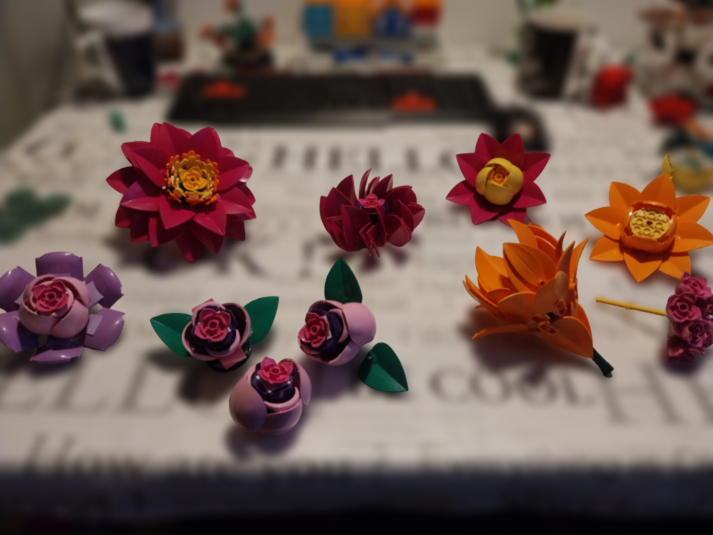
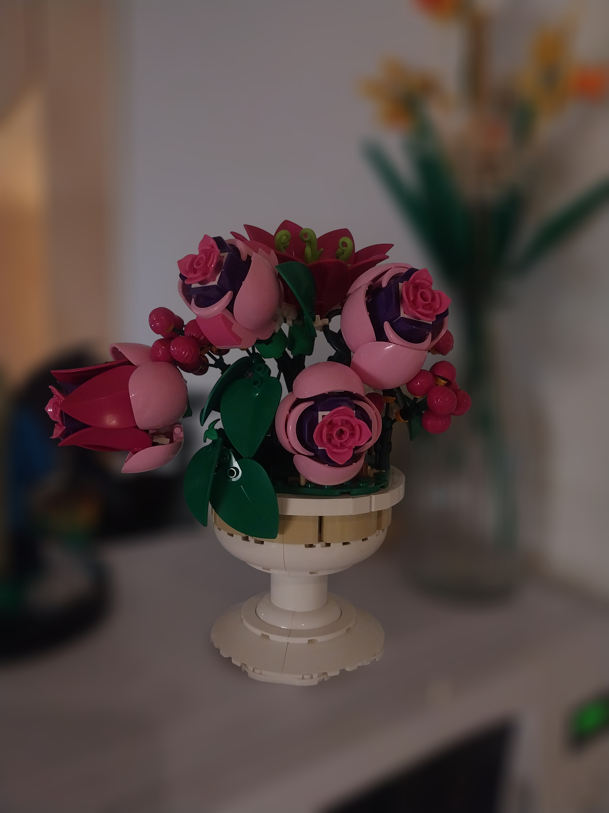
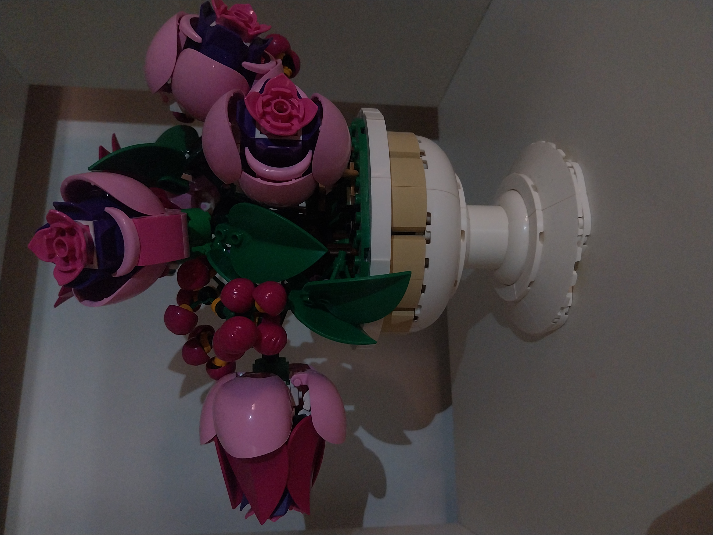
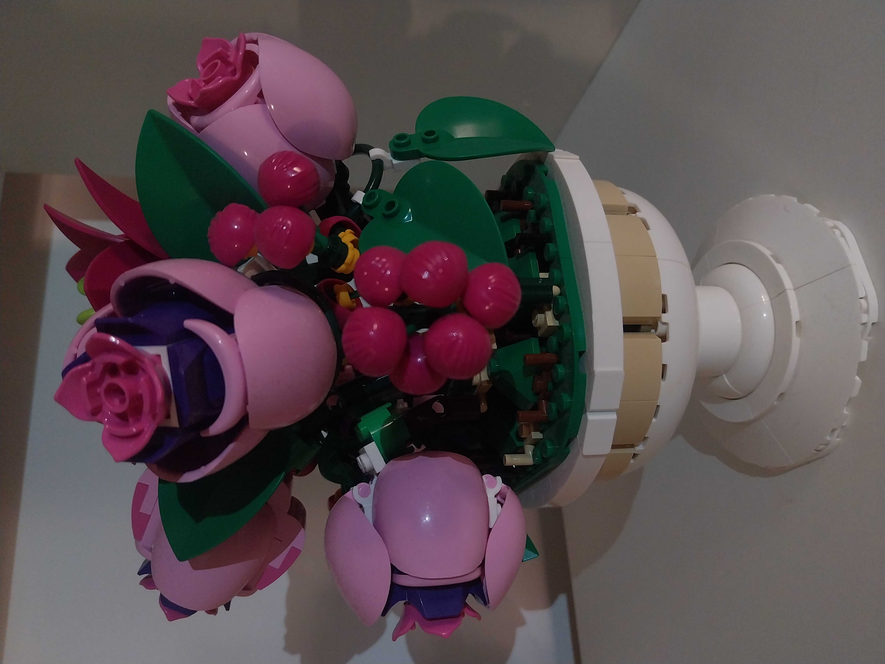

Flower festival arrangement
Tivoli Gardens in Copenhagen celebrates the late summer festivities by transforming into a vibrant feast of colors, gathering the finest florists of Denmark. Indeed, the Flower Festival is the most enchanting event of the year, and for a number of years now, the Tivoli LEGO team has been part of it by inviting visitors for activities where they can build their own flowers out of LEGO bricks.


Inspired by the atmosphere, and the pieces that filled the pool of bricks, it did not take long for me to start putting together a series of small flower heads. These are more than just decorative elements on the festival, I can also use them when showing some inspiration to the visitors, as one of the responsibilities I have when stationed at such an event is to give people some starting ideas by using the provided bricks together. Some of these I found myself to be quite fond of, so at the end of the festival I collected a few of my small "prototype" flower heads and put them together in a display, rooted in a stand and decorated with some extra elements.


The base is from the set 10345 Flower Arrangement, and some simple Technic connections join this to a number of different buds that mostly use the same pieces, but each are their own variation, representing some of the many ways in which just a few bricks alone can be used to create a visually pleasant display. To elevate the variety of the arrangement, some different elements were later added. To complete the model, I felt the necessity to break up the dominating colors of pink rose like flower heads with more green and a strong contrast that came in slightly different size. Sprinkling some magenta minifig swimming caps on vines and attaching them to the base achieves this as they complement the larger, light pink petals around them very well, creating a pleasant ensemble of colors.